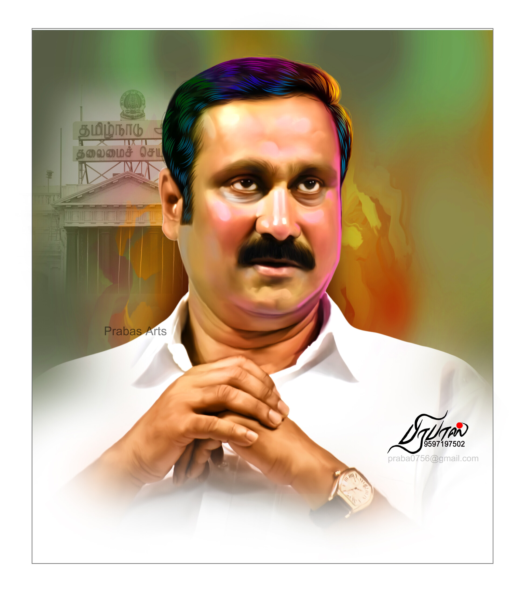
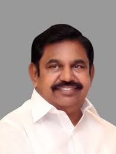
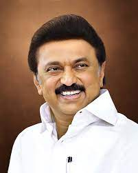
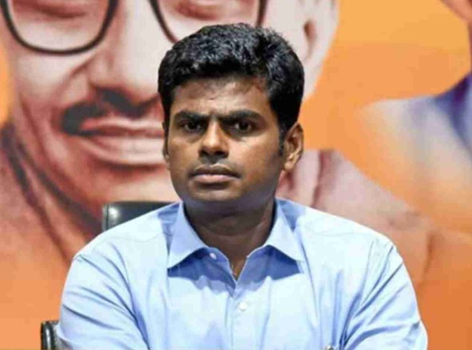
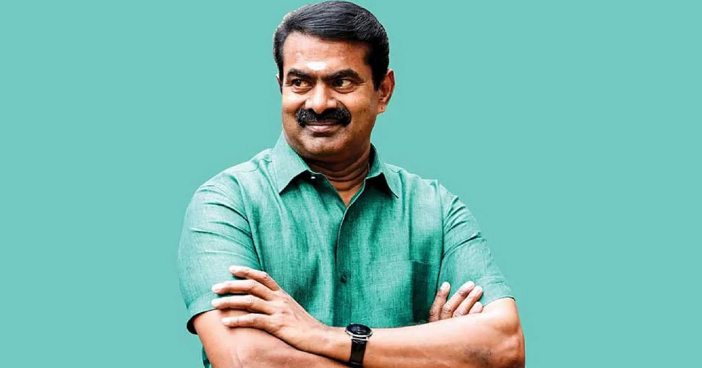
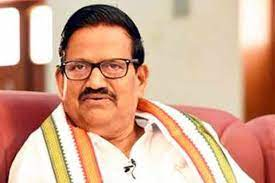

DR.ANBUMANI RAMADOSS
Anbumani was born on 9 October 1968 at Puducherry to S. Ramadoss and R. Saraswathi. S. Ramadoss was a physician by profession, who later founded the Pattali Makkal Katchi in 1989.Anbumani joined Pattali Makkal Katchi, founded by his father and became the state president.in the year 2004–2009 He was a Member of Rajya Sabha and Union Minister of Health and Family Welfare. 2014–2019 Member of 16th Lok Sabha and Member of Standing Committee on Rural Development
Member, Consultative Committee, Ministry of Home Affairs
Member, Committee on Absence of Members from the Sittings of the House.

K.PALANISWAMI
K.Palaniswami was born on 12 May 1954[4] to Karuppa Gounder and Thavasiyammal at Siluvampalayam, Salem, Madras State, India (now in Tamil Nadu, India).Palaniswami entered politics as a volunteer for the AIADMK in 1974.Later he became the key member of the party in Salem district. He was first elected to the Tamil Nadu Legislative Assembly in 1989, representing Edappadi constituency, and won re-election in 1991. He was elected Member of Parliament, representing Tiruchengodu constituency in the 12th Lok Sabha.Palaniswami became the Chief Minister of Tamil Nadu in February 2017.

M.K.STALIN
Stalin is the third son of 2nd Chief Minister of Tamil Nadu and DMK Chief M. Karunanidhi, and was born to his wife, Dayalu Ammal. Stalin was born in Madras, now Chennai, on 1 March 1953. In 1989 and 1996 to 2026 continuosly standing the member of legislative Assembly.37th Mayor of Chennai at 25 October 1996 – 6 September 20021st Deputy Chief Minister of Tamil Nadu at 29 May 2009 – 15 May 2011.8th Chief Minister of Tamil Nadu.

K.ANNAMALAI
K. Annamalai is an Indian politician. He is the president of the Bharatiya Janata Party in Tamil Nadu. He was associated with the All India Anna Dravida Munnetra Kazhagam before joining BJP. K. Annamalai is a 2011 batch IPS officer, who served at various locations in Tamil Nadu as a civil servant for a period of nine years.During his college days, K. Annamalai actively served as the Secretary of the Samvedi Society and its management circle. He was also associated with the Abhiyan (Entrepreneurship Cell of IIM Lucknow) and Character and Personality Club of the college as its Student Coordinator.From September 2011 to December 2011, K. Annamalai was an Officer Trainee at LBSNA Mussoorie, Uttaranchal, India. He then joined the Officer Training at Sardar Vallabhbhai Patel National Police Academy in December 2011 and received the training till September 2013..

Senthamizhan Seeman
Senthamizhan Seeman(born 8 November 1966) is an Indian politician, filmmaker and the chief-coordinator of the political party Naam Tamilar Katchi in Tamil Nadu. He is an advocate of the creation of vote bank for Tamils.Seeman began his career as a filmmaker in the mid-1990s, working on films such as Panchalankurichi (1996) and Veeranadai (2000). The failure of his early films made it difficult for him to attract offers as a director and several of his proposed projects were stalled in the late 1990s. He later made a comeback through the successful vigilante film Thambi (2006), though the commercial failure of his next film, prompted Seeman to prioritise commitments as a supporting actor in the late 2000s.
In the early 2010s, Seeman started a Tamil nationalist political party, and has since often been in the news for his controversial statements on Indian social issues.

K S Alagiri
K S Alagiri is an Indian politician representing the party Indian National Congress. He is the president of Tamil Nadu Congress party and an ex-member of the Parliament of India from Cuddalore Constituency.[3] Previously, he was elected to the Tamil Nadu legislative assembly as an Indian National Congress candidate from Chidambaram constituency in 1991 election, and as a Tamil Maanila Congress candidate in 1996 election.